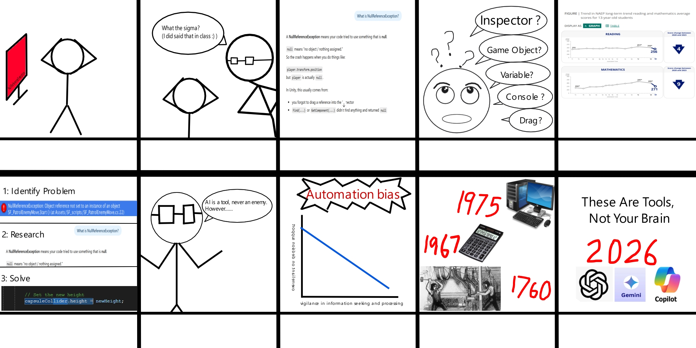
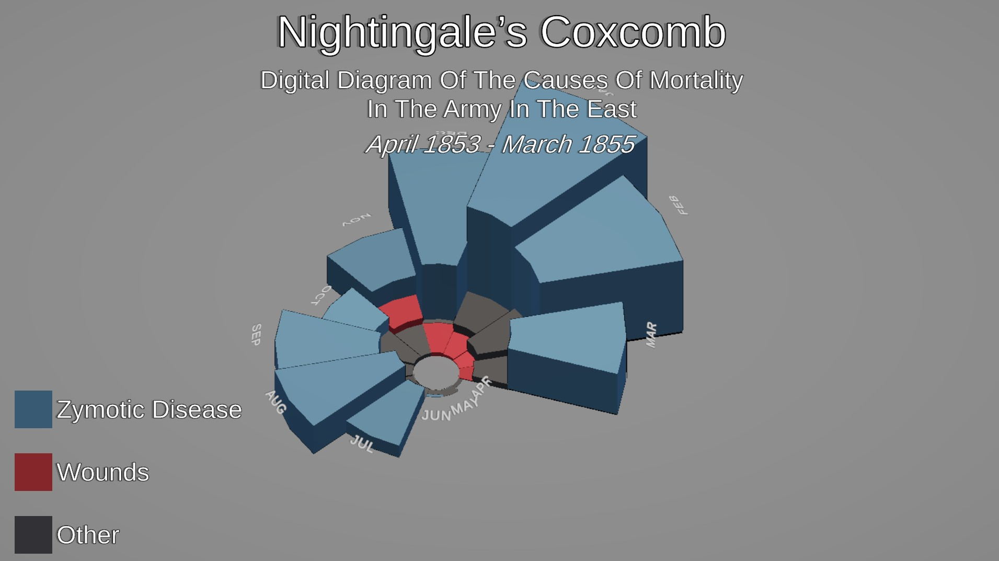
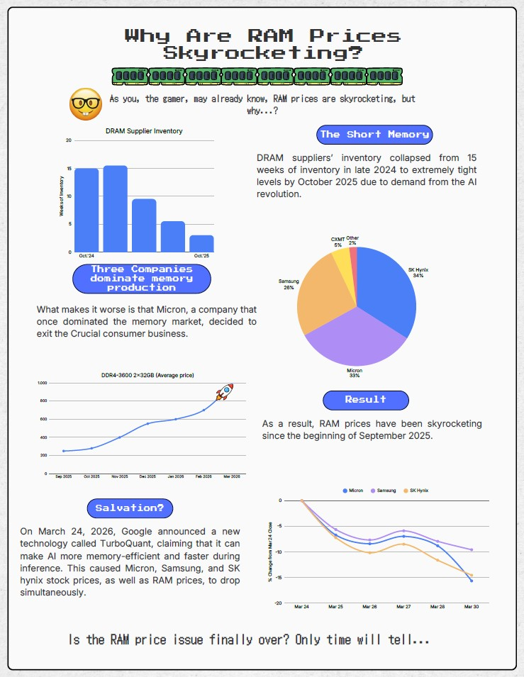
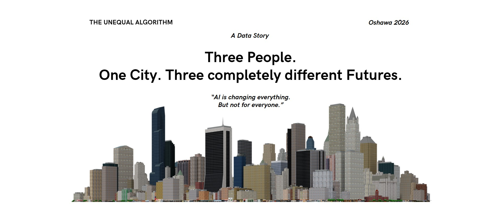
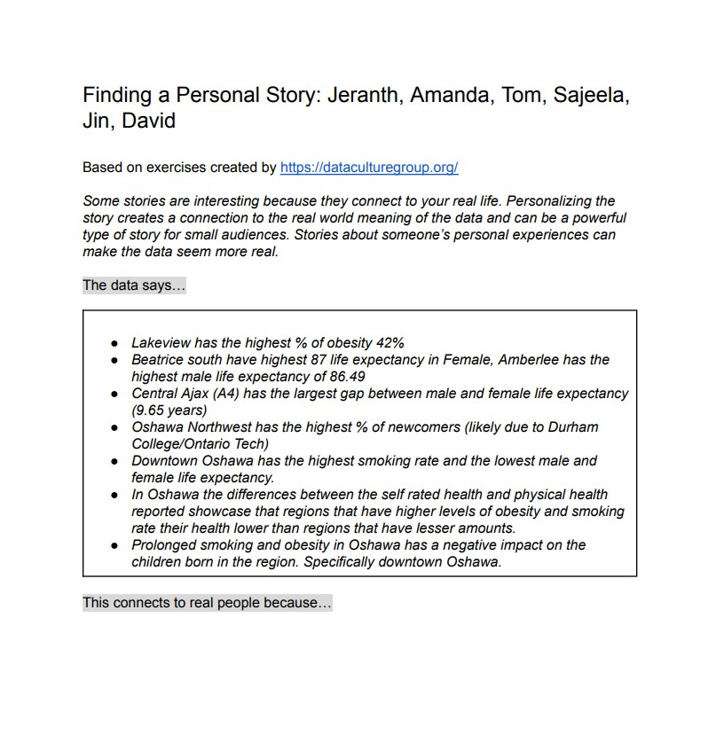
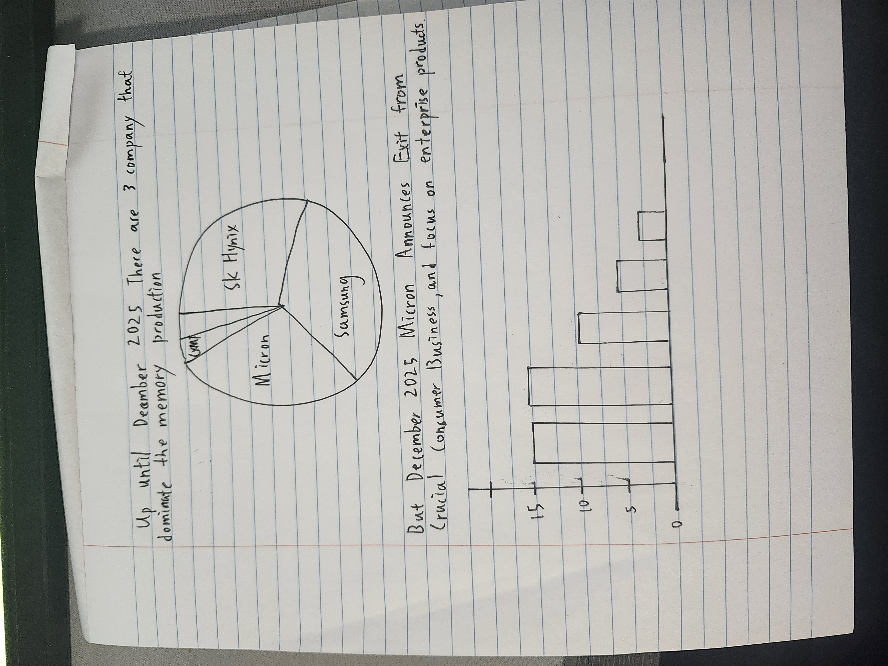

Background
I am an aspiring game development artist with a strong interest in 3D modelling, digital design, and interactive media. I enjoy shaping technical or research heavy topics into visuals that are easier to explore, understand, and remember.
I'm Jin Chan, an Ontario Tech University student with an interest in data visualization, storytelling, and interactive design. This portfolio showcases selected work from my Visualization and Storytelling course, including storyboards, redesign projects, infographics, and web based data stories.
I am interested in data visualization, storytelling, game development, and interactive design. My work often combines clear communication with interactive thinking, especially in projects that bring together visual structure and audience engagement.
I am an aspiring game development artist with a strong interest in 3D modelling, digital design, and interactive media. I enjoy shaping technical or research heavy topics into visuals that are easier to explore, understand, and remember.
My work includes coding in Unity, building visual prototypes, and helping younger learners engage with digital projects. That experience made me pay close attention to clarity, pacing, and how an audience actually reads a screen.
Selected assignments from my Data Visualization and Storytelling course.

A human-centred storyboard exploring how overreliance on AI tools may weaken step by step reasoning and information-seeking habits in younger learners.
Purpose: This assignment asked students to create a professional portfolio item through creative interpretation and human-centred storytelling.
Description: Students prepared a storyboard for a human-centred data story related to a topical concern. The submission included sketches, prototypes, and notes showing iterations with design rationale.
Key Requirements:

A redesign of Nightingale’s coxcomb chart as an interactive 3D visualization in Unity. The project uses height and movement to make magnitude comparisons easier.
Description: Students redesigned a notable information graphic using contemporary interactive methods.
Submission Requirements: The project included design sketches, prototypes, and notes showing multiple iterations with a rationale for design decisions.
Available Graphics:
Selected Graphic: I chose to redesign Nightingale’s coxcomb into a spatial interactive format.

A persuasive infographic examining the rise in RAM prices and connecting market concentration, inventory shortages, and AI-driven demand.
Description: Students designed a persuasive infographic around a topical theme in the news.
Task: The work involved choosing a topic, collecting relevant data, visualizing it, building a clear message, and presenting that message visually.
Submission Requirements: No report was needed, though students had to show three successive iterations, with the first done as a hand-drawn sketch.

A collaborative human-centred data story created with my team using a website format. The project combines data, visuals, and explanatory writing to discuss affordability in the AI era.
Description: Students worked in groups to prepare a persuasive human-centred data story using government or industry data.
Core Tasks:
Project Focus: This year’s theme explored how the AI revolution may affect affordability in Oshawa, Durham Region, or the GTA.
Selected in-class activities included in my portfolio package.

A group activity focused on building a personal data story by connecting neighbourhood health data to lived experience in Oshawa, with attention to smoking, life expectancy, obesity, newcomers, and health conditions.

A concept sketch exploring whether the AI revolution is making PC upgrades less affordable for everyday users by connecting rising memory and SSD prices with market concentration and industry shifts.
Feel free to connect with me through email, LinkedIn, or GitHub.
You can contact me through email, LinkedIn, or GitHub.
Feel free to reach out for collaboration, project discussion, or portfolio feedback.